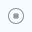

Prerequisites
- A project has been created, and the project does not contain a node in Offline state.
- Users can create analysis tasks only under their own projects.
Procedure
- Click
 next to the target project in the project list.
next to the target project in the project list.The Add Analysis Task page is displayed. The page content varies depending on the analysis object and mode, as shown Figure 1, Figure 2, and Figure 3.
- Set task parameters.

You can click
 in the middle of the page to hide the banner on the home page.
in the middle of the page to hide the banner on the home page.Table 1 Parameters for adding a task Parameter
Description
Task Name
Name of the task. The name must meet the following requirements:
- Contain only letters, digits, and special characters (including @#$%^&*()[]<>._-!~+ and spaces).
- Contain 1 to 32 characters.
Analysis Object
Object to be analyzed. The options are:
- Systems: collects performance data of the server, regardless of the types of applications running in the system. The sampling duration is determined by the parameter specified. This option is recommended for servers running multiple types of services and subprocesses.
- Application: collects data of a specified application or process for analysis.
Mode
Mode for application analysis. The options are:- Launch Application: starts the application when the sampling begins. The sampling duration is determined by the execution time of the application. This option is recommended for applications with short execution time. The scenario analysis covers the application and its subprocesses.
- Attach to Process: associates the existing PIDs on the server during data collection. You need to configure the sampling duration parameter (applicable to scenarios where the application runs for a long time). The scenario analysis covers only the PIDs in the parameter, not the sub-processes of the PIDs.
This parameter is mandatory only when Analysis Object is set to Application.
Application Path
Enter the absolute path of the application to be analyzed. For example, to analyze the loop_test application stored in the /home/test directory, enter /home/test/loop_test.
This parameter is mandatory only when Analysis Object is set to Application and Mode is set to Launch Application.
(Optional) Application Parameters
Set application parameters based on the actual application scenario.
This item is available only when Analysis Object is set to Application and Mode is set to Launch Application.
(Optional) Application User
This parameter is available only when Analysis Object is set to Application and Mode is set to Launch Application. It is disabled by default.
- Disabled: The application user is the default system user launcher.
- Enabled: The application user is the configured user.
Process
Name of the process to be analyzed. Regular expressions are supported.
This parameter is mandatory only when Analysis Object is set to Application and Mode is set to Attach to Process.
PID
PID of the process to be analyzed. Separate PIDs with commas (,).
This parameter is available only when Analysis Object is set to Application and Mode is set to Attach to Process.
Binary/Symbol File Path
Absolute path of the binary or symbol file on the server.
This parameter is mandatory only when Analysis Object is set to Application.
NOTE:- You can use this parameter to import the symbol table of an application when you need to view the performance data after source code and assembly instructions are mapped but the corresponding application has no symbol table information.
- If the binary file of the application contains debug information, you only need to save the binary file in the directory.
- If the binary file of the application does not contain debug information, save the binary file and the corresponding debug information file in the directory.
Collection Duration (s)
Sampling analysis duration. The default value is 15. The value range is 1 to 300.
Size of the Collected File (MiB)
Size of the file to be collected. The default value is 100. The value range is 1 to 100.
- Click OK.
You can click the icon next to the task name or node name to perform the following operations:
 : re-analyzes a task or node. You can modify the task parameters and restart the analysis task.
: re-analyzes a task or node. You can modify the task parameters and restart the analysis task. : views the analysis path of a task or node.
: views the analysis path of a task or node. : views basic task information and logs.
: views basic task information and logs. : deletes an analysis task. After a task is deleted, all data of this task will be deleted. Exercise caution when performing this operation.
: deletes an analysis task. After a task is deleted, all data of this task will be deleted. Exercise caution when performing this operation.- : cancels an ongoing analysis task.
- The administrator (tunadmin) can view, repeat, and delete analysis tasks created by all users.
- Common users can view, repeat, and delete their own analysis tasks and view the analysis tasks created by other users.
- If the task name of a repeated analysis task is the same as that specified during task creation, the repeated task cannot be started.